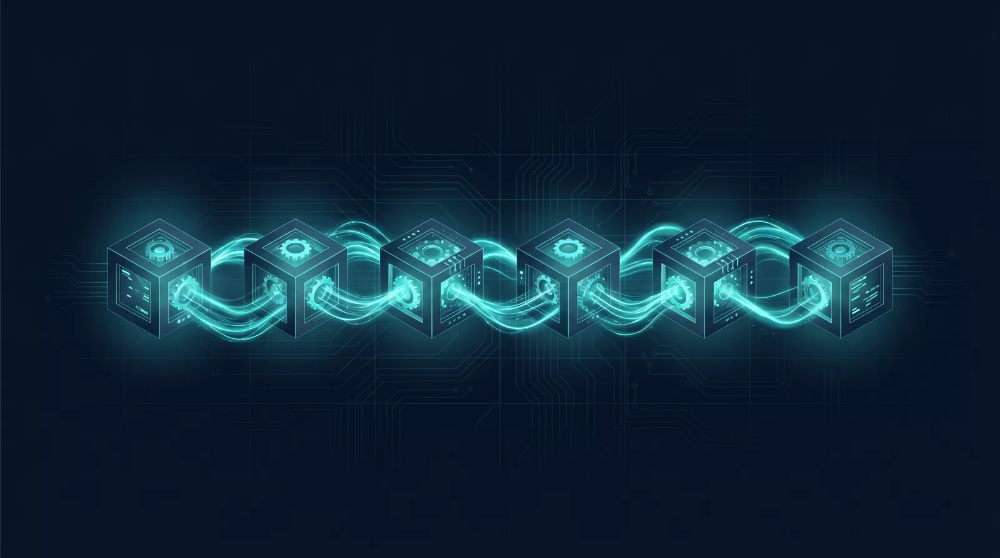

How Conversion Forge ships systems instead of retainers. The architecture, the model stack, and the principle behind every deliverable being owned by the client.
Each engine is a distinct workflow. Specialisation means each ships fast and breaks less. Failure in one engine does not cascade to the others.

Most of what calls itself AI is a single model doing everything. That is the quick way, and it shows in the work. We do the slower, more deliberate thing. Every part of your project is given to the system best suited to it, and the parts that matter are checked by a separate one that played no part in making them. More passes, more scrutiny, and a result that holds up when it counts.
Each engine is a distinct workflow with its own LLM model, its own data sources, and its own success criteria. Lead generation runs on a different rhythm than payment integration, which runs differently from SEO. Specialising the engines means each one ships faster and breaks less than a single monolithic system would. Failure in one engine does not cascade to the others.
More than one system, and never only one. Different work calls for different strengths, so each task is given to the approach best suited to it, and the parts that matter are checked by a separate, independent one. We are not tied to any single provider, which is also why the work keeps running if one of them has a bad day.
Yes. Every engagement closes with a handover bundle: source code, content, accounts, and credentials, in a folder the client owns. The agency retains internal operating systems, but the client never has to come back to us to make a change. If we ever stop trading, the client keeps running.
It means the core lead-generation system (Google Business Profile, contact form, basic site, first outreach sequence) is configured and live within 48 working hours of the initial discovery call. It does not mean every long-term growth lever is in place. Those layer in over weeks two through six.
Platform-verifiable numbers only. Impressions and conversion rates come from Google Search Console, eBay Seller Hub, Instagram Insights, or the client's own analytics. The case study page publishes screenshots, not estimates. If a number cannot be sourced from the platform that generated it, it does not get used.
Until 30 documented case studies are filed, every engagement is a UK small business. Tradesmen, restaurants, beauty practitioners, eCommerce. Same playbook, same architecture, ten clients deep before broader expansion. Specialisation compounds; spreading does not.
Book a free 30-minute strategy call. We'll show you exactly which engines your business needs and which ones it does not.